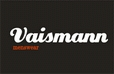
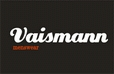

«Дроздов & Партнёры» - Консалтинговая компания, которая способствует успешному развитию бизнеса и деловой активности. Предоставляет профессиональные услуги, основанные на знаниях, информации и опыте.
Наша миссия: Сделать бизнес наших Клиентов простым и понятным.
Наше видение: Профессиональное бизнес-сообщество, с высоким уровнем развития компетенций каждого.
О компании
Дроздов & Партнёры – ведущая украинская компания, предоставляющая услуги в области управленческого консалтинга. С 2009 года Дроздов & Партнёры работает с лидерами украинского рынка, оказывая услуги широкому кругу клиентов из Украины и других стран СНГ, в том числе компаниям, специализирующимся в оптово-розничном, финансовом, страховом и многих других секторах.
Мы находим и привлекаем к работе в Дроздов & Партнёры самых талантливых людей и делаем все возможное для того, чтобы они добились успеха, открывая перед ними уникальные возможности профессионального и личностного роста.
Наши знания и опыт позволяют нам понимать долгосрочные перспективы развития экономики и бизнеса. Мы принимаем активное участие в обсуждении самых актуальных проблем и делимся своими идеями с деловыми и общественно-политическими кругами, ведя личный блог управляющего партнера компании Константина Дроздова.
Ключевой компетенцией Компании является реализация консалтинговых проектов в области:
- Корпоративного управления;
- Корпоративной диагностики на основе анализа бизнес-процессов, стратегии и структуры компании;
- Индивидуального консултирования менеджмента по вопросам управления конфликтами и изменениями.
- Маркетинговых исследований;
- PR-продвижения;
- Организации и развития бизнеса;
- Управленя проектами;
- Подбора менеджмента: тестирования и подбора персонала.
Консультанты-эксперты Компании это:
- Высокий уровень профессионализма и креативности;
- Современность и технологичность;
- Любовь и уважение к Клиентам;
- Экономия времени и денег Клиентов;
- Нацеленность на решение четко определенных задач и достижение конкретных результатов.
Наша миссия:
Сделать бизнес наших Клиентов простым и понятным.
Наше видение:
Профессиональное бизнес-сообщество, с высоким уровнем развития компетенций каждого.
Наши ценности:
- Открытое и честное отношение к Клиентам;
- Превосходное качество услуг;
- Высокая корпоративная культура;
- Интеллектуальный капитал сотрудников;
- Непрерывное обучение и анализ приобретенного опыта;
- Постоянное развитие собственной методологии корпоративного управления и консалтинга;
- Соблюдение профессиональных этических стандартов.
Ключевые принципы Компании:
- Профессионализм;
- Непрерывное совершенствование;
- Нацеленность на результат;
- Ответственность за Клиента.
Наши особенности:
- Уникальная методология осуществления бизнес-консультирования в области методов и структуры управления;
- Гарантированное достижение оптимизации бизнес-процессов;
- Большой опыт в формировании позитивного климата в Компании;
- Многолетний опыт осуществления оперативного, стратегического управления Компаниями (управленческий аутсорсинг);
- Мы разрабатываем и внедряем «нешаблонные» консалтинговые проекты;
- Мы проводим комплексное обучение персонала всех звеньев управления в компании. Индивидуально, под каждого клиента, мы разрабатываем программу обучения (семинары, тренинги, мастер-классы).
Наши эксперты
Константин Дроздов
Консультант, бизнесмен, предприниматель с более, чем 20-ти летним опытом. Еще в 1991 году организовал несколько оптово-розничных сбытовых сетей на рынках Дальнего Востока, Москвы и Одессы. Управляющий партнер консалтинговой компании «Дроздов & Партнёры». Эксперт-практик в области управления изменениями и конфликтами в организации. Автор уникальных методик по разработке, построению и внедрению системы первоклассного сервиса в организации. Практический опыт внедрения эффективных методов и структур управления организацией.
Сфера интересов:
- формирование позитивного климата в компании за счет внедрения системы управления конфликтами;
- оптимизация бизнес-процессов за счет внедрения системы управления изменениями;
- развитие у персонала компании (в B2C/B2B-секторах), на всех уровнях управления, понимания философии превосходного сервиса;
- бизнес-консультирование в области структуры и методов управления.
Действительный член Европейской Ассоциации Развития Бизнеса. Сертифицированный консультант Adizes Institute по внедрению Методологии И. Адизеса. Признанный эксперт-консультант проектов Медиа-холдинга «100%». Действительный член Всеукраинской ассоциации бизнес-тренеров, консультантов и коучей.
В 2002-2010 год создаёт и выводит на лидирующие позиции в Украине различные сети магазинов розничной торговли, среди которых: «Раса», «Анютка, «Взуйка».
Партнер-консультант торговых комплексов «Куб» (2009 г.) и «Територія мінімальних цін» (2010 г.) в рамках разработки стратегии развития и продвижения на рынке Украины. Консультант компании «AlexBell» в период становления бренда в Украине и развития сети магазинов. Содействовал в становлении самого молодого ресторатора в Украине, который в свои неполные 23 года стал управляющим ресторана Гринвич, а затем La Veranda. Константин Дроздов выступает бизнес-консультантом по развитию у персонала, на всех уровнях управления, понимания философии превосходного сервиса в: Ресторанах: La Veranda, Jardin (с 2012 года по настоящее время) Кофейнях: «Espresso», «Кофеин». Центрах отдыха и туризма: Otrada Luxury Group (с 2010 года по настоящее время), «Мирный» (с 2009 года по настоящее время), «Дельфин» (с 2009 по настоящее время), «Прикарпатье» (с 2006 года по 2011 год, внедрял антикризисные программы развития в период с 2008 года по 2010год) Аквапарке «Коблево» (с 2008 года по 2011 год.) Volkswagen Центе «Автомобильном Дом «Одесса» (Персональный консультант ТОП-менеджмента компании с 2010 года по настоящее время).
Позиция Константина, как консультанта: «Традиционные схемы и методы работы необходимо использовать лишь, как некий «букварь», а не как прямое руководство к действию. Во всех процессах должно иметь место опыт, мудрость, творчество и профессионализм».
Наши клиенты
 



Контакты
Звоните нам по телефонам:
+38 (066) 247 02 88
+38 (096) 772 52 55
Пишите нам на E-mail:
info@dandp.com.ua
Находите нас по адресу:
г.Киев, ул, Мечникова, 2, БЦ 'Парус', 15 этаж